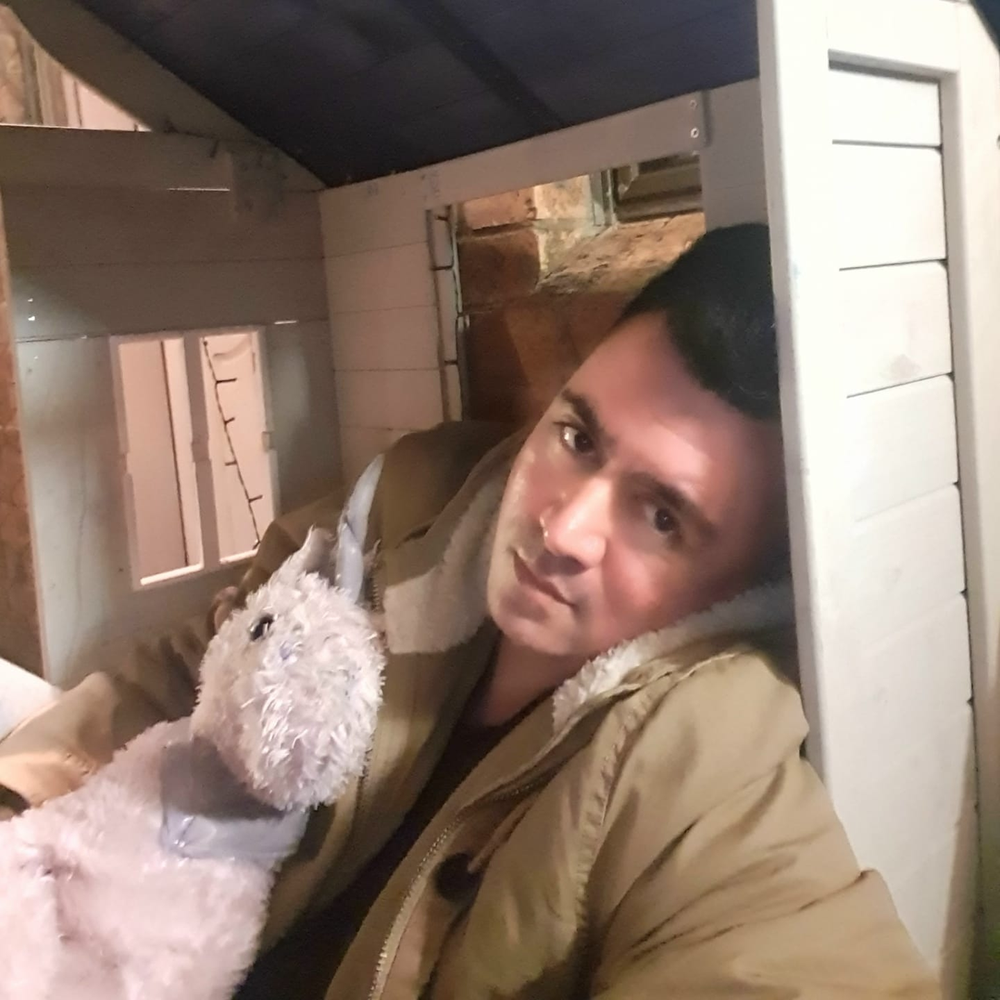

Personal Information
Name: Sameh Abdelhamid
Sudent Number: S9967839
Student Email: s9967839@student.rmit.edu.au
The above picture was taken of me, during a deer hunting trip with my 5 year old son at Lake Eildon. I arrived in Australia when I was 3 years old with my parents, from Egypt. I was born in Cairo and migrated here with them in search for a better life. I've grown up in Australia, and consider myself Australian, even though I wasn't born here, this is the only home that I know. I enjoy camping and hunting as well as 4 wheel driving. I spent a lot of my time in the garage building cars and motorbikes. I'm not qualified but have done this all my life and love it. My 3 boys love camping and working in the garage and I am hoping they grow up to have this kind of lifestyle as I believe it builds good resilience and problem solving skills. I've completed a diploma in visual arts/multimedia and currently work in the IT field and have done so for the last 20 years.

Sudent Number: s3925300
Student Email: s3925300@student.rmit.edu.au
My name is Sonam Shahi, and I am from the beautiful country of the Himalayas-Nepal. I can speak Nepalese, Hindi, and English. I moved to Australia in 2015 and currently living with my husband in Sydney. I started my own small online business in 2019, which provides traditional attires to the Hindu community living in Australia. Before moving to Australia, I lived in Qatar for two years, working for an airline. I love traveling and exploring new places, learning their culture, trying their food, and learning about their history. I got the opportunity to travel to few countries and meet new people when I lived in Qatar. I have a strong affection towards dogs and miss my 13-year-old dog, who is back home. Besides, I am always thinking of ways to help stray dogs back home, whether through donations to social workers who provide shelter to stray dogs or by spreading awareness through social media. My interest in IT started when I was in high school back home. I had the opportunity to choose computer science as an optional subject and quickly became interested in it. I am amazed how IT has helped transform the lives of so many people, including myself, especially during pandemic. From getting in touch with my family back home to running my online business, IT has played a massive part in transforming my life, and I am looking forward to a great career.

Sudent Number: S3934611
Student Email: S3934611@student.rmit.edu.au
My name is Desmond Knowles, I’m 34 and from New South Wales. I was born in Auckland, New Zealand and moved to Australia when I was 3 years old. I am part Cookislander, Niuean and caucasian. Most people aren't familiar with Niue so I'll explain that Niue is a small Island nation in the Pacific just west of the Cook Islands. I enjoy playing video games, watching sci-fi and anime, karaoke and playing guitar.

Sudent Number: S3932394
Student Email: s3932394@student.rmit.edu.au
My name is George Tsolomitis, I am 25 years old, and I am from South Australia. I come from a Greek background as my grandparents and my dad are from Greece who travelled to Australia a number of years ago. I have previously completed my year 12 studies and was going to continue on to complete a degree in Graphic Design, however after taking a year off, I decided I had a change of heart. I am currently working in a Financial Planning firm and have been studying to become a Financial Planner, then to go on and complete my Accounting degree. My ultimate long-life goal is to study more into IT as I am interested in technology and artificial intelligence. I do speak the Greek language and have been to Greece a number of times however Covid and restrictions have stopped me from going again. Going to Greece is a big experience for me as I love seeing where my dad grew up and where my ancestors come from. In my free time, when I am not working or studying, I am building cars in my shed which is one of my hobbies and has been since I was a young kid. I love to restore objects, whether that is cars, computers, and electrical appliances. I remember as a kid, I had a battery, some wires, a motor from a remote-control car, and come fins from a remote-control helicopter. I put them all together and made a small fan, which is an easy task but I felt so accomplished. I also use my down time for gaming with friends and spending time with my partner.